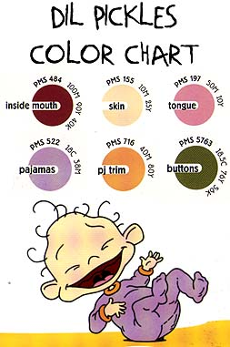
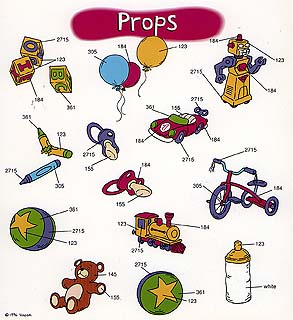

PART EIGHT:
COLORING AND PROPS

Anyone familiar with a computer program such as Photoshop will tell you how easy it is to fill in various shapes with any color one could imagine, but sometimes it's harder than it looks.
Every single thing in a cartoon has specific colors assigned to it: every piece of clothing and every button on every shirt has to be consistent from one scene to the next.
That's why most show "bibles" contain a color chart for each of the characters, like the one shown here for Dil Pickles.
The number that corresponds to each of the circles of color above is its Pantone Matching System number.
By typing in this number while selecting a customized color in Photoshop, it enables colorists to find just the hue they are looking for.

As one can see, even the props have color charts that correspond to make them consistent from show to show.
(See the illustration to the left.)
Like the characters, some props are crucial to the cartoon.
What would Rugrats be without Angelica's doll Cynthia, or Tommy's favorite ball?
How could Eliza see for miles in the jungle without her trusty pair of binoculars? Most of the time props are part of the background, but when they come into the action, they are often very important.
How important you might ask? Well, the Reptar Wagon is considered a prop in the Rugrats Movie, but it is so significant to the film that it is practically one of the characters.